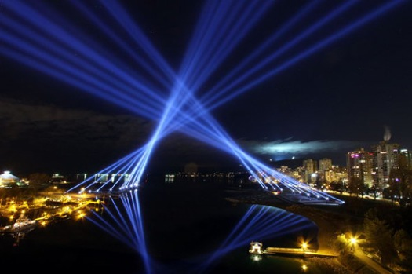
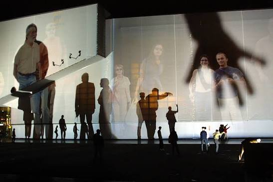
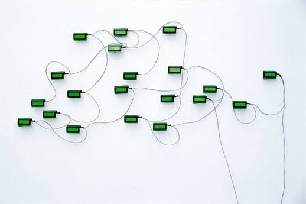

pulse room

pulse room traduce los latidos cardíacos de los visitantes en pulsos de luz. cada persona modifica la instalación mediante su propia frecuencia cardíaca.
interactividad, espacio público y arte tecnológico
pulse room traduce los latidos cardíacos de los visitantes en pulsos de luz. cada persona modifica la instalación mediante su propia frecuencia cardíaca.

los participantes controlaban reflectores gigantes por Internet para crear composiciones de luz sobre la ciudad.

la obra utiliza sombras proyectadas por los visitantes para revelar retratos de personas sobre edificios.

una computadora genera y muestra preguntas continuamente, explorando la relación entre inteligencia artificial y lenguaje.

ofrece una nueva perspectiva sobre sus “antimonumentos” y sus dimensiones poéticas y políticas.